Кадры настоящей production RunnerScene, без макетов. Уклонение заменено четырьмя ритм-дорожками. Перед игрой №2 грозы нет: гроза идёт на 1000/100, затем герой забегает в комнату игры №3. Референс использован только как принцип взаимодействия; чужой графики и интерфейса нет.
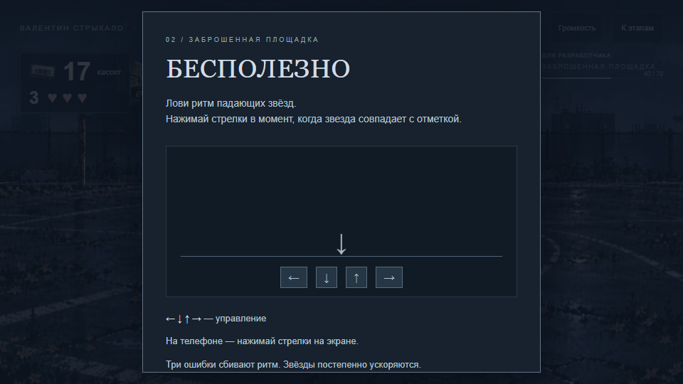
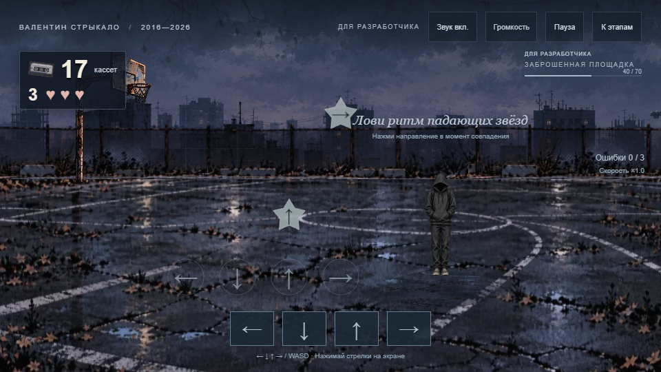
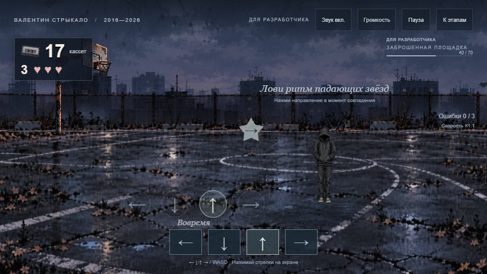
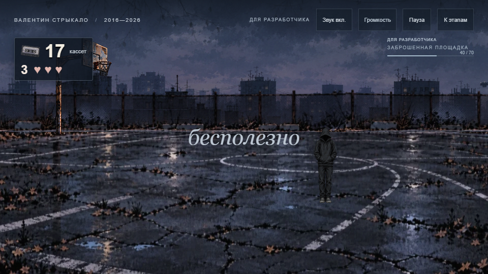
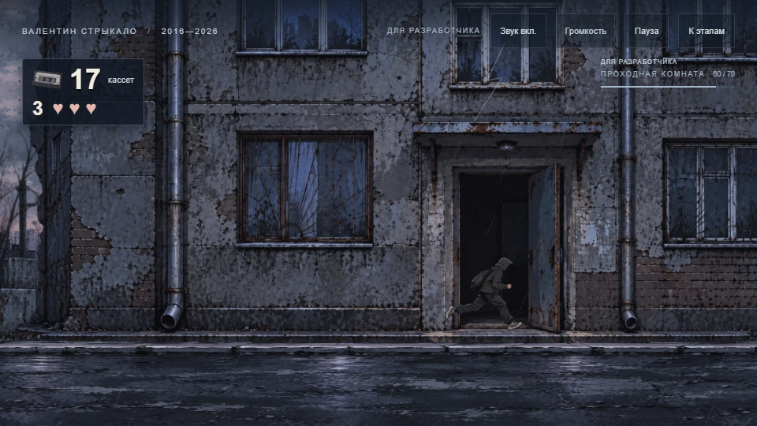
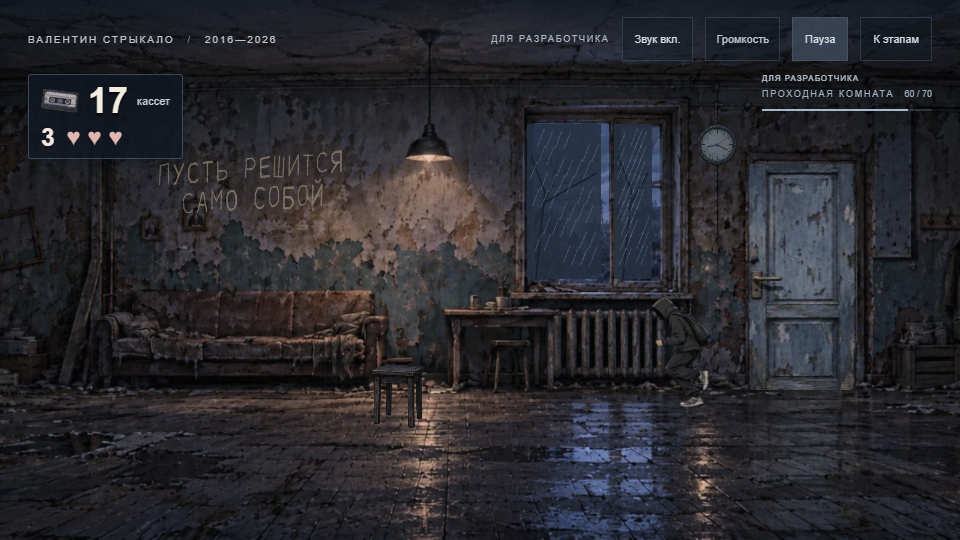
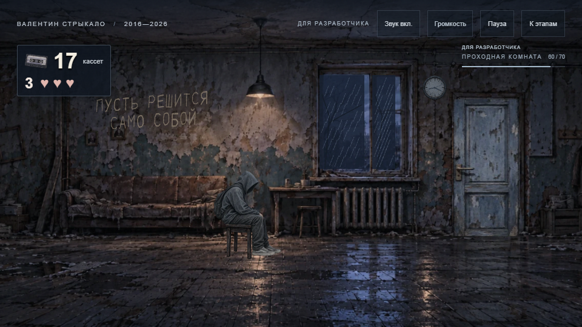
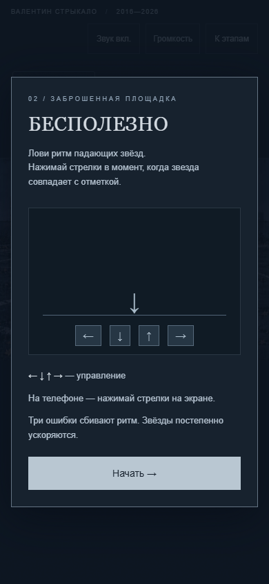
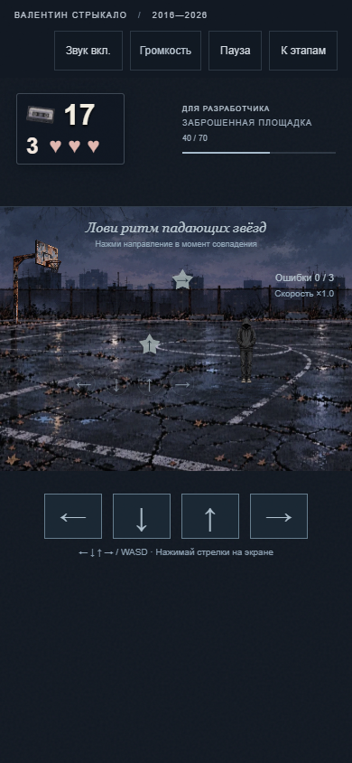
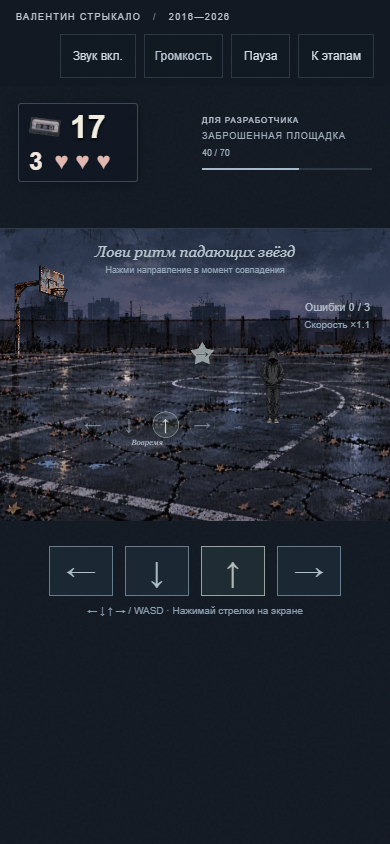
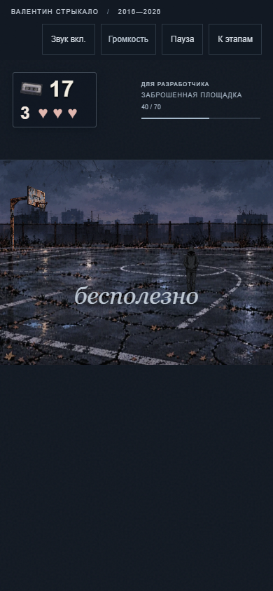
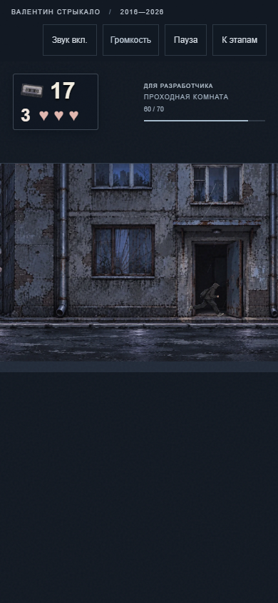
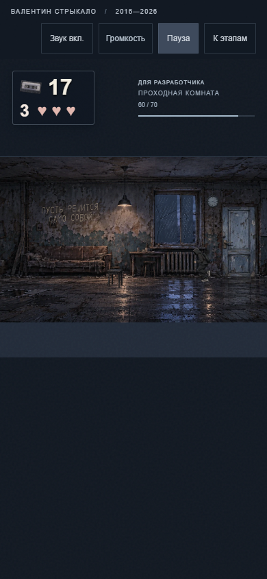
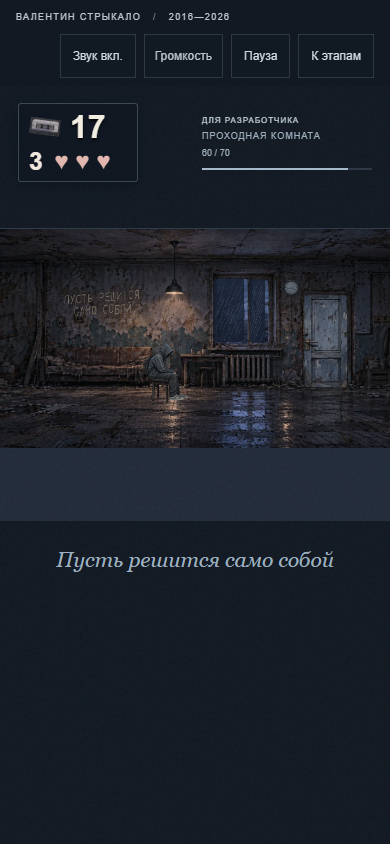
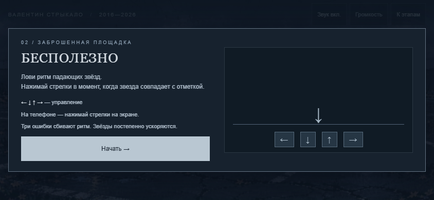
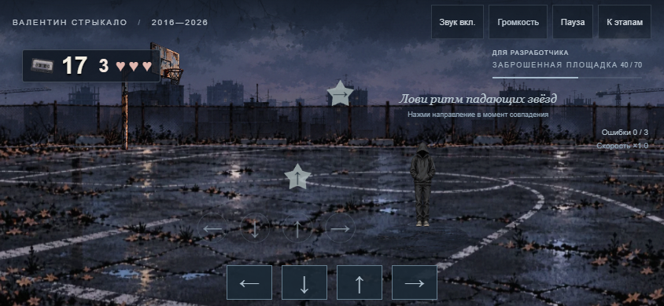
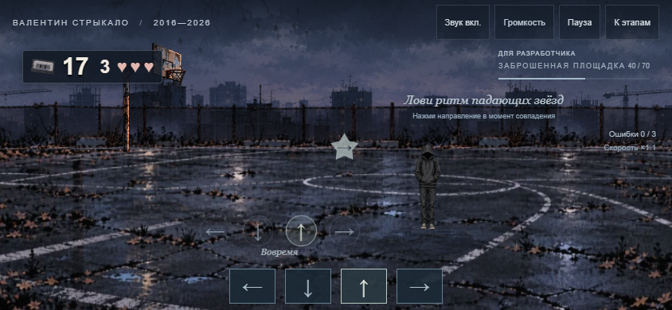
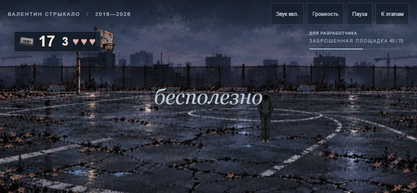
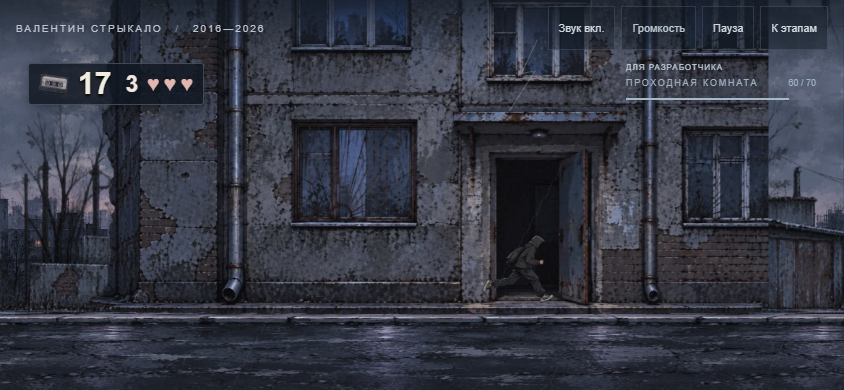
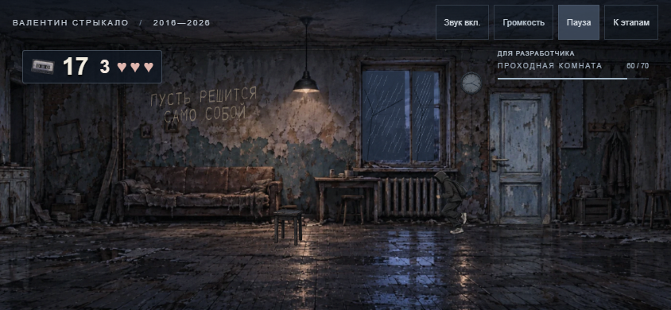
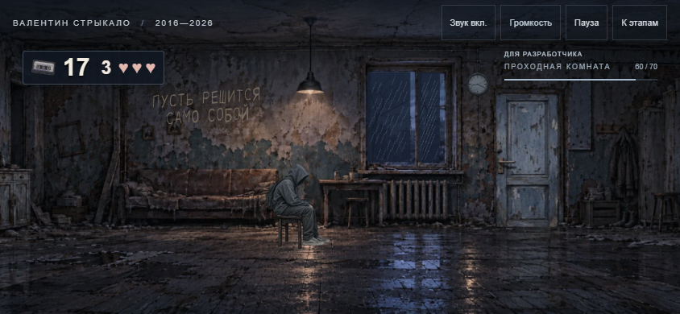